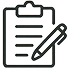
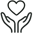
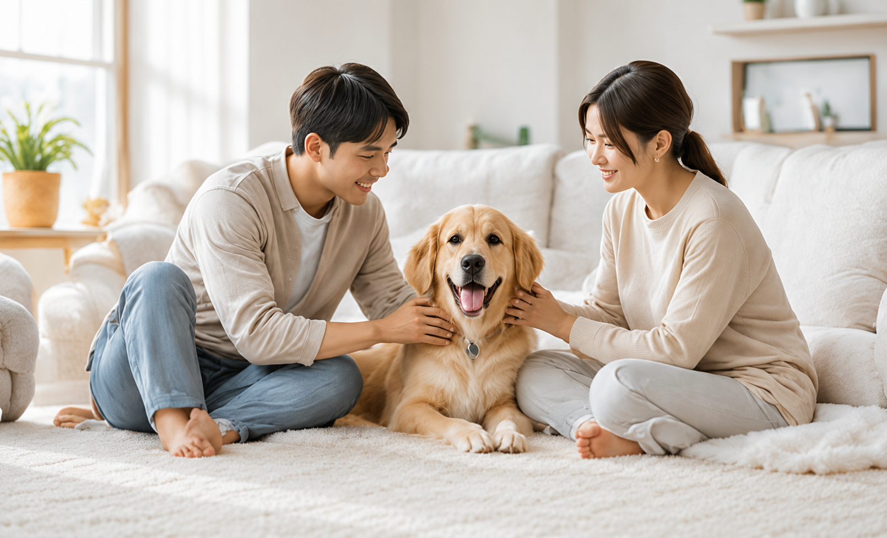
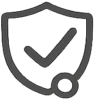
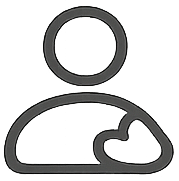
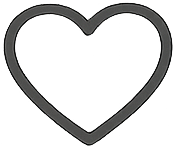
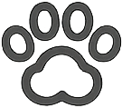

ADOPT
책임 있는 입양의 첫걸음
홈페이지 또는 전화로 입양 상담을 신청합니다.

전문 상담원이 입양 조건과 환경 등을 확인합니다.
아이의 행복을 위해 가정 방문을 진행합니다.
입양 심사 결과를 바탕으로 최종 승인을 진행합니다.
계약서를 작성하고 예비 가족 교육을 진행합니다.

새로운 가족과 함께 행복한 삶을 시작합니다.
입양을 원하시는 아이의 정보를 홈페이지 또는 전화, SNS를 통해 상담을 신청합니다.
전문 상담원이 입양 신청자의 생활환경·형편, 가족 구성원 및 반려동물 경험 등 다양한 기본 정보를 기반으로 심사를 진행합니다.

아이의 행복을 위해 입양을 원하는 가정을 직접 방문하여 실제 환경을 확인하고, 입양한 뒤 잘 적응할 수 있는 환경인지 점검합니다.
입양 심사 결과를 기반으로 입양 적합 여부를 최종 검토하고 승인합니다. 모든 아이들이 적합한 가족을 만날 수 있도록 합니다.
모든 아이들이 적합한 사랑받을 수 있는 가족을 만날 수 있도록, 서리펫이 함께합니다.



